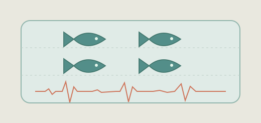

← Back to selected research
MASTER'S RESEARCH · 2 JOURNAL PAPERS
Scalable EEG platforms for zebrafish
Built multi-animal EEG systems for adult and larval zebrafish using mechanical design and microfluidics. Validated recording performance in seizure and anti-epileptic treatment models. Related device inventions received registrations in Korea and the EU.
EEG Microfluidics Device prototyping

MASTER'S RESEARCHConceptual zebrafish recording illustration.
PROJECT OVERVIEW
From idea to evidence.
My contribution
Designed device architectures and recording workflows for repeatable multi-animal EEG studies, including microfluidic positioning for larval zebrafish.
Findings & significance
Published EEG platforms for adult and larval zebrafish and contributed to registered EEG device patents in Korea and the EU.